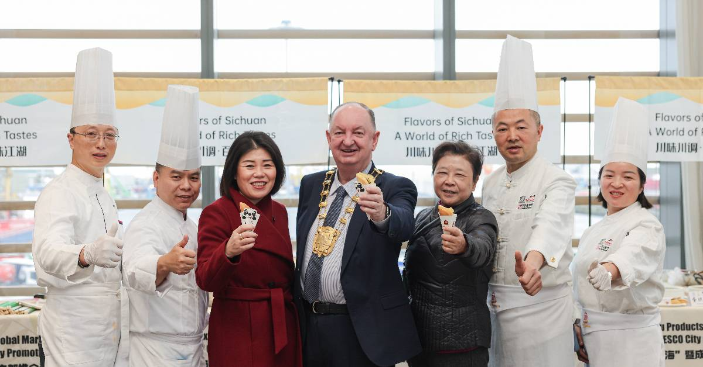
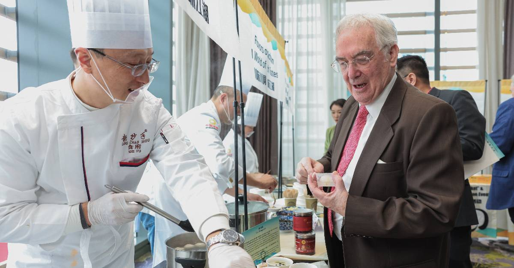
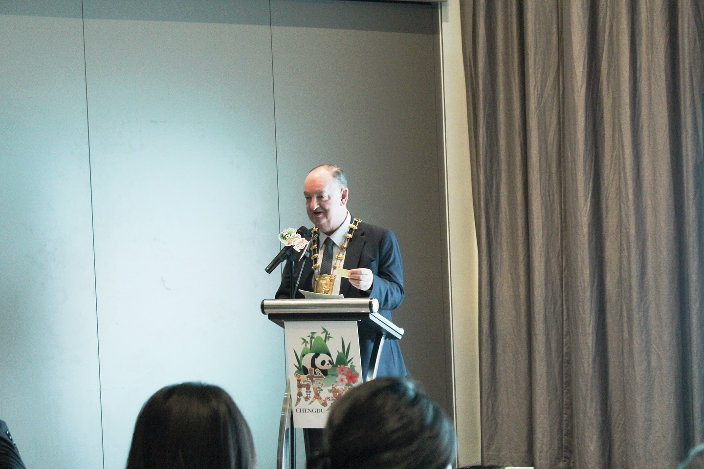
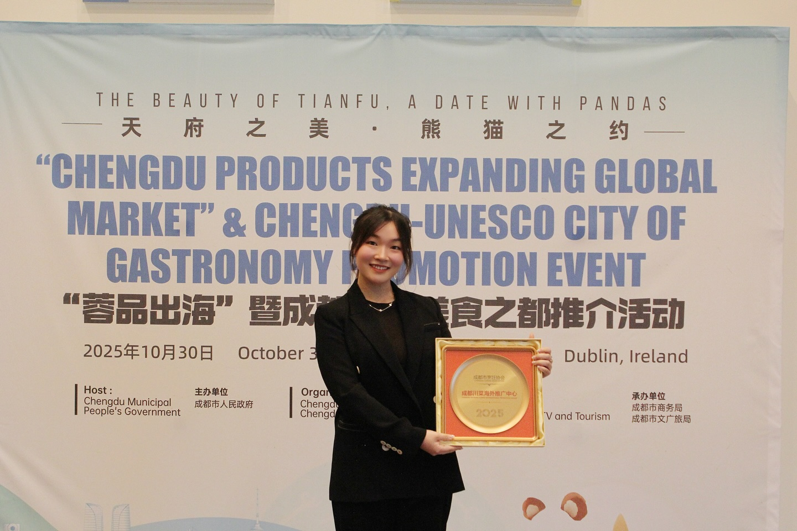
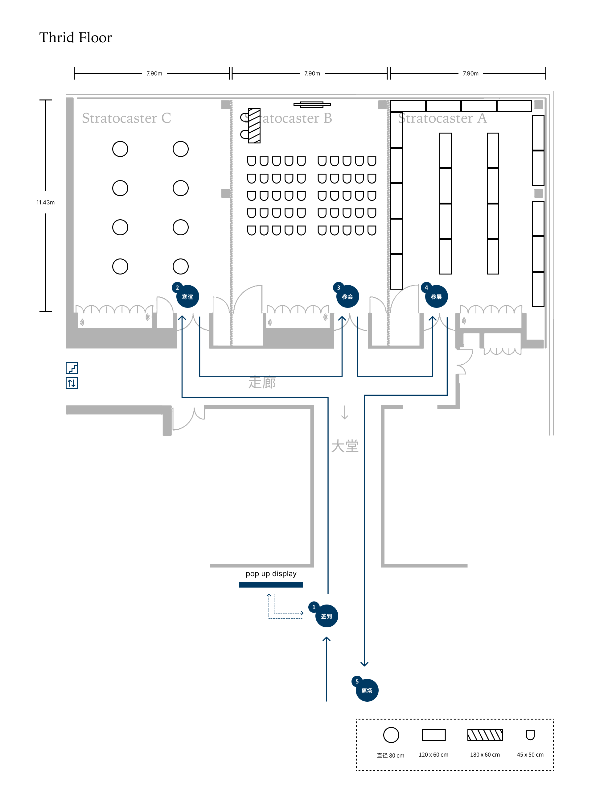
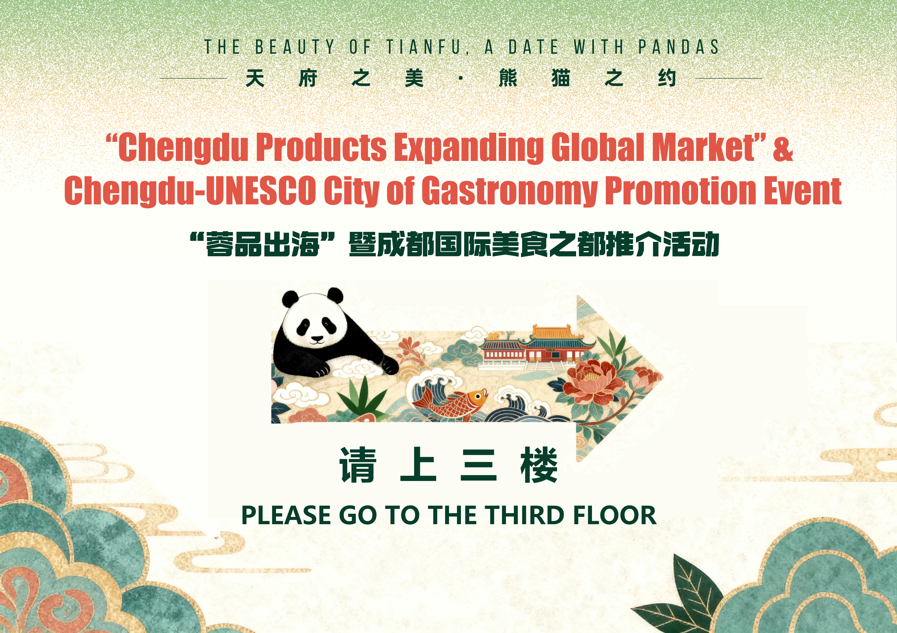

Flagship Case Study
Chengdu UNESCO Cultural Promotion, Dublin
A cross-border cultural event requiring remote stakeholder management, venue coordination, culinary display planning, live-stream/photo proposal sign-off, contingency planning, budget tracking, and press coordination.
Context
Chengdu UNESCO cultural promotion required a polished private-event format for international stakeholders, with remote coordination between Chengdu requirements and a Dublin venue.
Role
Brand Experience Manager owning stakeholder translation, proposal sign-off support, venue-facing planning, production documentation, and live technical delivery.
Scope
- Photo and live-stream proposal
- Culinary display, food stall, and chef photo coordination
- Gibson Hotel seating plan and visitor-flow planning
- Off-site pop-up board design, press coordination, and certified-units ceremony support
What I Owned
- Secured sign-off for photo and live-stream proposal.
- Translated Chengdu stakeholder requirements into venue-facing actions and guest-flow planning.
- Prepared 5 contingencies for culinary display and live delivery risks.
- Tracked commercial categories across venue, catering, AV, print, live-stream, and content production.
- Sourced, wrote, and arranged multi-outlet press coverage after the event.
AM Evidence
Proposal sign-off, stakeholder updates, venue liaison, supplier coordination, risk log, budget tracking, delivery documentation, press follow-up.
Constraints
- Remote stakeholder coordination across countries and time zones.
- Complex culinary display and food-stall requirements inside a venue environment.
- Live-stream reliability, photo coverage, and venue readiness.
- Scope control against approved budget and delivery expectations.
Outcome
Delivered the approved scope with venue readiness, live capture, culinary display, ceremony delivery, press coverage, and stakeholder alignment completed.
Images, Decks, Assets





